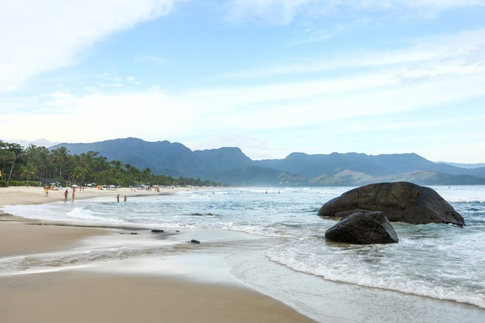
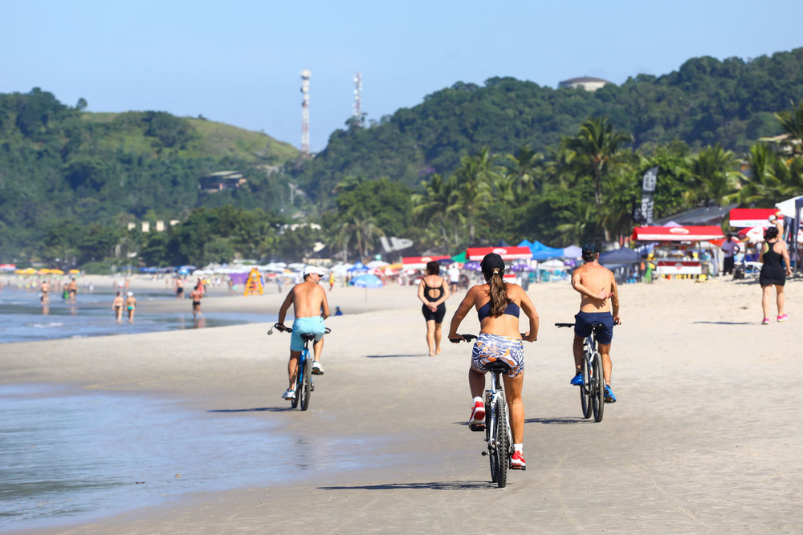
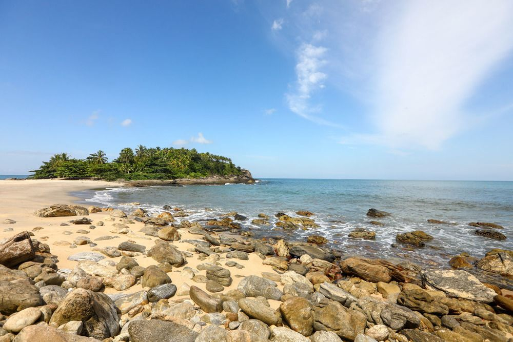

Praia de Maresias

A Praia de Maresias é a principal praia de São Sebastião e, de tão importante, muitos turistas acham que ela é uma cidade. Principal destino do litoral norte de São Paulo, Maresias atrai pela boa infraestrutura, grande número de pousadas e fartura de restaurantes.
Como chegar
Rodovia dos Imigrantes (SP-150) Após descer a serra pela Imigrantes, é preciso seguir no sentido Guarujá pela Rodovia Cônego Domênico Rangoni (SP-248/55), também conhecida como Piaçaguera – Guarujá, até o posto rodoviário.
Praia de Juquehy

A Praia da Juréia tem visual marcante. É ladeada por dois costões rochosos com presença forte de vegetação, o que reforça a presença da natureza. Tem ondas fortes em determinadas épocas, o que atrai o pessoal do Surf, mas também tem ambiente familiar para pessoas com consciência ambiental. Para crianças, a melhor parte é um riacho que desagua no mar, raso e dessa forma um local ótimo para as brincadeiras e curtir a praia.
Como Chegar
A Praia de Juquehy está distante 52 km do centro de São Sebastião e 26 km da Praia de Maresias (sentido sul). O acesso é pela BR 101 (Rodovia Rio Santos).
Praia de Calhetas

Praia de Calhetas é uma das mais bonitas entre as praias de São Sebastião. Localizada em uma península que segue em direção ao mar, Calhetas tem duas praias distintas, uma de cada lado da faixa de areia. Você poderá escolher o seu visual predileto para curtir o dia de sol.
Como chegar
A Praia de Calhetas está distante 18 km do centro de São Sebastião (sentido sul) e 11 km da Praia de Maresias (sentido norte), entre as praias do Toque-Toque Grande e Toque-Toque Pequeno. O acesso à faixa de areia é por uma propriedade particular, com entrada pela BR－101.